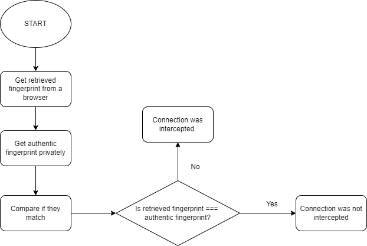

Welcome to Fingerprints Essay!
Fingerprints Essay
Fingerprints
Hyunseo Lee
Allen ISD STEAM Center
Advanced Computer Science II
Mr.Ben-Yaakov
August 25, 2022
HTTPS Connection & HTTPS Proxy Appliance
Hypertext Transfer Protocol Secure (HTTPS) is the secure version of HTTP, which is the primary protocol used to send data between a web browser and a website. The primary purpose of a secure, HTTPS connection, is to provide a secure protocol that is encrypted using technology that no one knows how to break. Also it is to protect users' security and privacy. It is supposed to be authenticated, secured, encrypted, and not allow to any form of eavesdropping by any third pary (GRC n.d.). HTTPS Proxy Appliances is a proxy that HTTP uses the HTTP protocol over SSL. Private institutions like corporations, schools, and other organizations deployed new technology known as HTTPS Proxy Appliances and responded to this loss of visibility into every detail of their employees' and students' Internet usage.
MITM & HASH
A man in the middle (MITM) risks to MITM attack, which is a general term for when a perpetrator positions himself in a conversation between a user and an application either to eavesdrop or to impersonate one of the parties, making it appear as if a normal exchange of information is underway. (Imperva, 2019) Hashes are complex mathematical algorithms that process every single bit of what they digest. When a hash is used to fingerprint a certificate any change, no matter how small, will result in a completely different fingerprint (GRC n.d.).
CA & SSL Interception
The Certificate Authorities, CA, are entities that websites prove their identity in the real physical world using many documentations. The role of this is to secure that the individual granted the specific certificate is, in fact, who he or she claims to be. (Vintegris, 2021) SSL interceptions cannot be prevented directly, but they can be detected that it is impossible to completely spoof a security certificate. They are detected by checking the fingerprint of the certificate. This is because whenthe certificate changes, new hashes are created.
False-Positive and False-Negative & Right to Eavesdrop
False-Positive is a test result which incorrectly indicates that a particular condition or attribute is present. False-Negative is a test result which incorrectly indicates that a particular condition or attribute is absent. I believe that only verified people of my school / government / ISP has a right to eavesdrop on my communications. This is because, in the event of an act that is against equity or against the law, it is necessary to confirm it in order to prove it.
References
- Steve Gibson, G.I.B.S.O.N.R.E.S.E.A.R.C.H.C.O.R.P.O.R.A.T.I.O.N. (n.d.). GRC : SSL TLS HTTPS web server certificate fingerprints. GRC | SSL TLS HTTPS Web Server Certificate Fingerprints. Gibson Research. Retrieved September 20, 2022, from https://www.grc.com/fingerprints.htm#top
- Imperva. (2019). What is MITM (Man in the Middle) Attack | Imperva. Retrieved September 24, 2022, from https://www.imperva.com/learn/application-security/man-in-the-middle-attack-mitm/
- Vintegris. (2021). The 5 most Frequently Asked Questions about Certificate Authority (CA). Retrieved September 29, 2022, from https://www.vintegris.com/blog/the-5-most-frequently-asked-questions-about-certificate-authorithy-ca/
